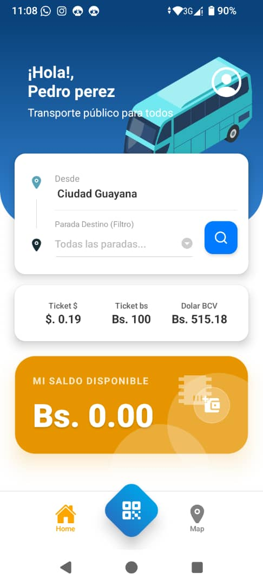
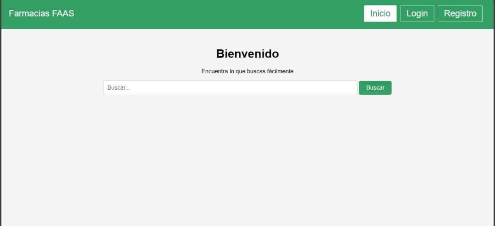
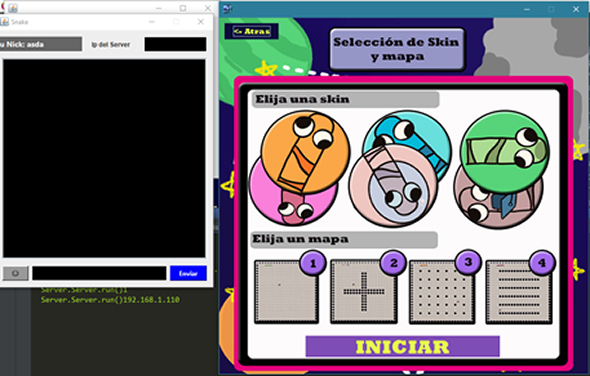

CÉSAR PERAZA
Ingeniero Informático
Ingeniero Informático
¡Hola! Soy César Peraza, un estudiante de ingeniería informática apasionado por la tecnología y el desarrollo de software. Me encanta resolver problemas y crear soluciones innovadoras que faciliten la vida de las personas en la comunidad.
Durante mi formación, he tenido la oportunidad de trabajar en distintos proyectos que me han permitido desarrollar mis habilidades en programación, análisis de sistemas y desarrollo de software.
Mi objetivo es seguir creciendo profesionalmente y contribuir al desarrollo de la tecnología para crear un futuro más eficiente.

2026 - TypeScript, MongoDB
Trabajé junto a un equipo en el desarrollo de una aplicación móvil para la gestión del transporte público en Ciudad Guayana como proyecto final para la asignatura Ingeniería del Software II. Desarrollé parte del backend utilizando TypeScript, el framework Fastify y MongoDB para integrar la gestión de conductores y el control de la boletería al proyecto.

2025 - PHP, Laravel, MySQL
Estuve junto a un equipos trabajando en una página web para la venta de medicamentos y gestión administrativa de una farmacia ficticia como proyecto final para la asignatura Sistemas de Bases de Datos I. Participé en el desarrollo Full Stack de la página utilizando el framework Laravel y me encargué del análisis y modelado de la base de datos.

2024 - Java
Lideré un equipo encargado de desarrollar una recreación del clásico juego Snake, añadiendo una función de multijugador online como proyecto final para la asignatura Técnicas de Programación III. Me encargué de la creación e integración de los gráficos, el diseño de los diagramas de casos de uso y de clases, la lógica del videojuego y el manejo de sockets para el funcionamiento del modo multijugador.